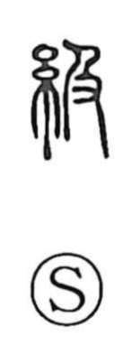

級

Uncategorized
Kun: | On: kyuu
class ・ rank ・ grade ・ stairway
Explanation
A phono-semantic character, 級 pairs the silk radical on the left with 及 on the right, which provides the sound kyuu and the image of catching up—reaching someone ahead from behind. When this before–after relation is reoriented vertically, it suggests an ordered ascent, giving rise to the sense of a stairway. Originally, the character described inserting threads into a loom and weaving them in a fixed sequence; from this idea of orderly progression developed the abstract notions of class, rank, and grade.